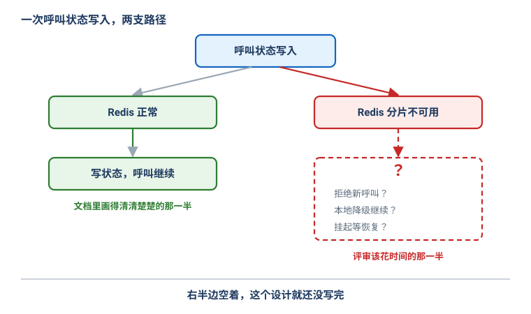
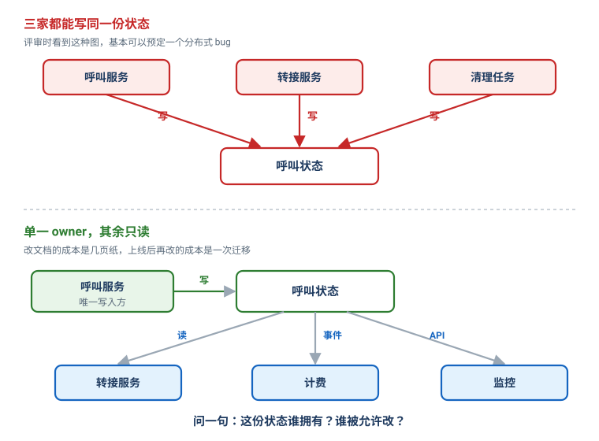

高效的设计评审：它是一场决策会，不是一场汇报会
Posted on 五 16 10月 2026 in Tech
| Abstract | 高效的设计评审：它是一场决策会，不是一场汇报会 |
|---|---|
| Authors | Walter Fan |
| Category | Tech |
| Version | v1.0 |
| Updated | 2026-10-16 |
| License | CC-BY-NC-ND 4.0 |
大纲
展开看看
- 一句话：好的设计评审是决策会，不是演示会。评审的目标是发现重要风险、做出决定，而不是把文档从头念到尾
- 会前先定问题：今天要定什么？解决什么问题？有哪些约束？最大的不确定性在哪？——这几个问题答不出来，会就白开
- 一页纸摘要：问题、目标、非目标、方案、关键决策、主要风险、备选、待定问题。评审人三分钟看懂
- 分层评审：先问需求，再看架构，别一上来就钻实现。大量"架构问题"其实是"需求问题"
- 主战场是失效场景：别只问"怎么跑"，要问"怎么坏"。设计图的右半边（失效分支）没画，设计就没写完
- 状态归属：这份状态谁拥有、谁被允许改？三家都能写同一份状态，基本可以预定一个分布式 bug
- 并发与一致性：强一致还是最终一致？能并发写吗？会乱序吗？会重复吗？有没有版本号？用具体场景逼出答案
- 可观测与运维：出事能不能查、能不能回滚、能不能排空节点。"凌晨三点系统挂了，on-call 怎么办"答不上来，设计有运维缺口
- 把评审意见分级：必改 / 该改 / 疑问 / 建议 / 以后再说，别让一个真正的一致性问题被"我不喜欢这个类名"淹没
- 用场景逼问，不用意见互殴：别问"Redis 比 MySQL 好吗"，要问"Redis 节点 A 在呼叫转接时挂了，你一步一步说清会发生什么"
- 一份清单 + 一个结尾模板：会前自查、会中追问、散会产出决策/必改项/负责人/复查时间
一个我见过太多次的场景：评审会开了一个小时，作者对着设计文档从第一页念到最后一页，PPT 翻得飞快，评审人偶尔点点头，到点散会，大家觉得"今天认真讨论过了"。
过了两周，这个方案上线，在网络分区时出现了两个"主"同时写数据。复盘会上有人翻出那份设计文档——里面根本没写"分区时怎么办"。更尴尬的是，评审会上没有一个人问过这句话。
这不是评审人不负责，是这场评审从一开始就开错了。它是一场汇报会：作者负责讲，评审人负责听。而我们真正需要的，是一场决策会。
好的设计评审是一场决策会，不是一场演示会。 它的产出不是"我们讨论过了"，而是一组决定、一串必改项、和每一项的负责人。
这篇讲怎么把评审开成决策会。面向做过后端 / 分布式系统的同行，幂等、quorum、熔断、fencing 这些词直接用。下面会用一条贯穿全文的例子——在多个 FreeSWITCH 节点间维护分布式呼叫状态——把每个抽象的原则落到一个能想象的场景上。
一、先定"今天要定什么",再谈方案
评审会最大的浪费，是开到一半才发现大家对"今天要解决什么"的理解不一样。所以会前第一件事，不是准备 PPT，是把下面几个问题写下来并发给所有人：
- 我们需要做一个什么决定？
- 我们在解决什么问题？
- 哪些约束是硬的？
- 最大的不确定性在哪？
- 需要评审人给什么反馈？
拿呼叫状态这个例子，一个像样的会前通知长这样：
我们要决定：新的呼叫状态服务，用 Redis Cluster 还是 MySQL 来存活动呼叫状态。约束是单节点故障不能丢活动呼叫、支持 1 万路并发、状态传播延迟低于 500ms。想听大家对失效场景和一致性要求的意见。
对比一下常见的那句：
今天我来给大家讲一下新服务的架构。
前者一发出去，评审人就知道该带着什么脑子来；后者只能让人被动地听。会前问题写不清楚，这个会基本可以不开——因为连"做完算成功"都没定义。
二、一页纸摘要：让评审人三分钟看懂
设计文档可以很长，但开头必须有一页纸，让任何一个评审人在两三分钟内看懂你要干什么。我习惯把这一页放在文档最前面：
# 设计评审：分布式呼叫状态
## 问题
在多个 FreeSWITCH 节点之间维护呼叫状态。
## 目标
- 单个 FreeSWITCH 节点故障时活动呼叫不丢
- 支持 1 万路并发呼叫
- 状态传播延迟 < 500ms
## 非目标
- 持久化呼叫历史（那是另一个系统的事）
- 跨地域复制
## 方案
FreeSWITCH → 呼叫状态服务 → Redis Cluster
Redis 是活动呼叫状态的唯一真相来源，TTL 自动过期。
FreeSWITCH 节点之间不直接通信。
## 主要风险
- Redis 不可用 / 主节点挂
- 网络分区
- 状态重复更新 / 故障切换时的一致性
## 备选方案
- MySQL / NATS JetStream / 本地状态 + 复制
## 待定问题
- 我们真正需要的一致性级别是什么？
- Redis 分区时到底怎么办？
"非目标"这一栏，比"目标"更能省时间。 它直接挡掉了"那历史记录怎么存""要不要支持跨地域"这类会把评审带偏半小时的问题。把边界画清楚，评审人才知道哪些事今天不用操心。
三、分层评审：别一上来就钻实现
拿到方案别急着看代码结构和类名。我习惯从外往里分三层评审，顺序不能倒。
第一层：需求。 系统到底要做什么？规模多大？延迟要求多少？要什么级别的可用性？出事时什么数据绝对不能丢？
这一层听起来像废话，但有相当比例的"架构问题"其实是"需求问题"。比如有人花三天争论 Redis Cluster 的拓扑怎么摆，争到最后发现——业务上根本不要求活动呼叫在节点故障时不丢，只要求 30 秒内能自愈。需求一改，整个方案的复杂度塌掉一大半。先确认需求，再设计，否则你可能在为一个不存在的约束做过度设计。
第二层：架构。 看职责划分清不清、依赖是不是必要、状态边界在哪、哪些路径是同步的哪些是异步的。
这一层有一个特别好用的问题：
"如果我把这个组件删掉，会坏什么？"
如果没人能清楚地说出某个组件为什么存在，那它八成是设计者"顺手加的",是个坏味道。架构评审的一半价值，就是把这些"顺手加的"东西逼出来。
第三层才是实现细节。 到这一层，前两层得先站稳。很多评审的毛病是跳过前两层直接扎进第三层——于是你在为一个需求都没对齐的方案抠实现细节，抠得再细也是白抠。
四、主战场：把大部分时间花在"怎么坏"上
这是整场评审里单位时间价值最高的部分，值得花掉一半以上的时间。
别只问：
"它是怎么工作的？"
要问：
"它是怎么坏的？"
把呼叫状态这个例子里能坏的地方列成一张表，挨个问"预期行为是什么":
| 失效 | 预期行为 |
|---|---|
| Redis 不可用 | 新呼叫还能建立吗？已有呼叫怎么办？ |
| Redis 主节点挂 | 多久能恢复？恢复期间这段状态在哪？ |
| 网络分区 | 哪一侧继续服务？另一侧怎么办？ |
| 服务崩溃重启 | 状态怎么恢复？从哪恢复？ |
| 同一请求重复到达 | 操作幂等吗？ |
| 消息投递两次 | 会发生什么？ |
| 消息丢失 | 会发生什么？ |
| 依赖返回 500 | 重试？超时？熔断？ |
| 配置填错了 | 能检测出来吗？ |
对分布式系统，我会要求把失效分支画出来，而不是用一句"我们有降级"带过。下面这张图把一次呼叫状态写入拆成两支——

左半边（Redis 正常）通常画得清清楚楚；而右半边（Redis 不可用）往往只有一句"降级处理"甚至一片空白。
如果设计图的右半边没有定义，这个设计就还没写完。
"降级"不是一个行为，它是一个占位符。追一句：降级到底是拒绝新呼叫、本地内存先顶着、还是挂起等恢复？这三种选法对用户的影响完全不同，作者必须选一个，并说清为什么。
五、状态归属：谁拥有，谁被允许改
对后端系统，有一个问题我每次都会问：
这份状态谁拥有？谁被允许改？
这个问题能在实现之前就抓出一大堆分布式 bug。看下面这两张图的对比——

上半部分是危险的写法：呼叫服务、转接服务、清理任务三家都直接写同一份呼叫状态。评审时看到这种图，基本可以预定一个线上故障——三个写入方的时序谁都说不清，并发一改就打架，出了问题根本不知道该去哪个服务排查。
下半部分是我偏好的写法：呼叫状态只有一个 owner（呼叫服务）能写，其余组件通过读、事件、API 三种只读方式拿数据。转接服务要改状态？它发一个事件给 owner，由 owner 来改，而不是自己动手。
这个约束在白板上看起来有点"官僚",但它的性价比极高：改一页设计文档的成本是几页纸，上线后再把三个写入方收敛成一个，成本是一次数据迁移外加一串线上事故。 状态归属这一关，是我认为设计评审里最该较真、却最常被跳过的一关。
六、并发与一致性：用具体场景逼出答案
对每一份重要状态，挨个问：强一致还是最终一致？可接受的陈旧程度是多少？能不能两个写入方同时改？操作会不会乱序到达？会不会重复？有没有版本号？有没有乐观锁？
但光问这些抽象概念没用，作者会条件反射地答"最终一致""我们有重试"。要用具体场景把答案逼出来。比如并发更新：
更新 A：version=10
更新 B：version=11
网络乱序，B 先到，A 后到。
没有版本检查：
最终存下的是 version=10 ❌（新的被旧的覆盖了）
有版本检查：
A（version=10）到达时发现当前已是 11，拒绝 ✓
这个具体的两行场景，比"系统是最终一致的"这句话有用一百倍——它直接暴露出：如果没有版本号，乱序就会让旧状态覆盖新状态。作者要么承认需要版本号，要么说清为什么这个场景不会发生。
一致性评审的诀窍就一句：别接受抽象的保证，把它翻译成一个具体的时序，看它站不站得住。
七、可观测与运维：出事那天谁来收拾
一个设计不是画完架构就完了，而是要能回答"它坏了之后我怎么查、怎么救"。这部分最常被忘掉。
可观测，挨个问能不能回答：
- 日志：请求 X 为什么失败？
- 指标：系统是不是在变糟？
- 链路（trace）：那 2 秒钟耗在哪了？
- 审计：这份状态是谁改的？
对呼叫这类通信系统，我会特别要求日志里带全这一串关联字段，否则线上根本串不起来一次呼叫的完整轨迹：request_id、trace_id、call_id、session_id、node_id、operation、version、latency、result、error。
运维，挨个问：怎么部署？能回滚吗？滚动发布时新旧版本能共存吗？数据怎么迁移？密钥怎么轮转？怎么扩容？怎么排空（drain）一个节点？数据损坏了怎么恢复？
有一个特别好用的检验标准：
"凌晨三点，系统挂了，on-call 工程师该做什么？"
如果这个问题的答案含糊，这个设计八成有运维缺口。设计评审不只评"它怎么跑得好",更要评"它出事那天，值班的人有没有一条清楚的路可走"。
八、把评审意见分级，别让噪声淹没信号
这一招能让评审会的产出清晰一个数量级。所有意见，强制分到五档：
- 🔴 必改：正确性、安全、可靠性或根本性架构问题。不改不能上。
- 🟠 该改：明显风险，但不足以否定整个方案。
- 🟡 疑问：评审人没看懂，需要作者解释。
- 🔵 建议：可改进，但不强制。
- 🟢 以后再说：有意思，但不是现在该做的。
为什么要分级？因为不分级的评审会，最容易变成这样：有人花十分钟争论"这个类名起得不好"（🔵），而一个真正的分布式一致性问题（🔴）被埋在底下没人深究。分级逼着所有人先把 🔴 和 🟠 过一遍，把时间花在真正能让系统出事的地方。评审的价值不在意见多，在于让最重要的意见不被噪声盖住。
九、会要短，产出要硬
一场常规的架构评审，我大致这样切时间：
5 分钟 问题 + 需求
5 分钟 方案概述
10 分钟 架构
20 分钟 风险 + 失效场景
10 分钟 备选 / 取舍
10 分钟 待定问题 + 决策
最后 10 分钟极其重要。 一场评审开完，如果没有落下这几样东西，那你刚才开的是一场讨论，不是评审：
决策：
通过 / 带修改通过 / 不通过
必须改：
1.
2.
待定问题：
1.
2.
负责人：
Alice → 第 1 项
Bob → 第 2 项
复查时间：
10 月 23 日
没有这块，散会后一个月，谁都不记得当时到底定了什么、谁该改什么。评审会的产出不是"大家都懂了",是白纸黑字的决策、必改项和负责人。
十、用场景逼问，不用意见互殴
这可能是你能对评审做的最大一处改进。把"互相表达意见"换成"用场景逼对方把设计走一遍"。
不要说：
"我觉得 Redis Cluster 够可靠了。"
要问：
"假设一路呼叫正在转接，这时候 Redis 节点 A 挂了。你一步一步说清楚，接下来会发生什么。"
不要说：
"重试机制应该没问题。"
要问：
"请求到了服务端，服务端提交了操作，但响应在回程丢了。客户端重试。这时候会发生什么？"
不要说：
"这是最终一致的。"
要问：
"可接受的最大陈旧时间是多少？如果它陈旧了 30 秒，会发生什么？"
意见会互相顶，场景不会——具体场景会逼着架构自己把底牌亮出来。 一个答不清"Redis 挂在转接途中会怎样"的方案，它自己就暴露了没想清楚的地方，根本不需要你去跟作者争"Redis 到底好不好"。
一份能照着念的检查清单
把全文压成一张可以贴在显示器边上的表，分三块用。
会前自查（讲方案的人，先过一遍）
- [ ] 问题：能用一句话说清解决什么问题吗？"非目标"写了吗？
- [ ] 需求：规模、延迟、可用性、绝不能丢的数据，都量化了吗？
- [ ] 架构：每个组件删掉会坏什么？答不上来的组件删掉
- [ ] 失效：设计图的"右半边"（各种坏法）都画出来了吗？
- [ ] 状态：每份重要状态的 owner 唯一吗？谁被允许改，标清楚了吗？
- [ ] 一致性：并发、乱序、重复、幂等，各有没有具体时序走过一遍？
- [ ] 可观测：日志能不能回答"请求 X 为什么失败"？关联字段全吗？
- [ ] 运维：部署、回滚、扩容、排空、数据恢复，各有没有方案？
会中追问（评审的人，逐条拷问）
- [ ] 我们在解决真问题，还是在解决一个"看起来很酷"的问题？
- [ ] 凡出现"应该 / 大概 / 一般来说",追一句"怎么知道的"
- [ ] 每个失效场景，追一句"然后呢",直到答案落到一个具体行为
- [ ] 每份状态，追一句"谁拥有、谁被允许改"
- [ ] 凌晨三点它挂了，on-call 有没有一条清楚的路？
纪律（守不住，拷问就变抬杠）
- [ ] 一次只问一个问题，问完闭嘴等回答
- [ ] 对事不对人，review 的是设计不是能力
- [ ] 顺着答案追问，而不是冷笑审判
- [ ] 允许并鼓励"我这块还没想清楚",把已知和未知分开
总结：把评审从"念文档"开成"做决策"
把全文收一下：
- 会前先定"今天要定什么"，再谈方案；需求没对齐之前，别抠实现。
- 主战场是失效场景、状态归属、并发一致性、运维恢复——这几处才是分布式系统真正出事的地方，而不是 UML 和类名。
- 用场景逼问，用分级聚焦，用结尾模板把决策钉死——散会时手里要有决策、必改项、负责人。
一句话落地：
一场评审开完，如果产不出"通过 / 带修改通过 / 不通过"加上一串负责人，那你刚才开的是讨论，不是评审。
下次开评审会，别急着让作者从头念文档，也别急着夸方案漂亮。先把"今天要定什么"摆到桌面上，然后挑一个最可能出事的场景，安安静静地问一句："这时候它怎么坏？" 真到方案越讲越复杂时，再狠一点，问一句："凌晨三点它挂了，谁来收拾？" 答得上来，这个方案才算经得起评审。
关于"怎么提问"这件事本身，可以接着看用苏格拉底提问法给设计方案做体检；关于本文那条贯穿案例里"两个主"的根因，见集群状态为什么该交给 etcd：用 Raft 从根上消除脑裂。
全文思维导图
@startmindmap
<style>
mindmapDiagram {
node {
BackgroundColor #F8F9FA
RoundCorner 10
Padding 10
FontSize 13
}
:depth(0) {
BackgroundColor #1E3A5F
FontColor white
FontSize 18
FontStyle bold
}
:depth(1) {
FontSize 15
FontStyle bold
}
:depth(2) {
FontSize 13
}
}
</style>
* 高效的设计评审\n决策会，不是汇报会
** 会前
*** 先定"今天要定什么"
*** 一页纸摘要
*** 写清非目标
** 分层评审
*** 需求（架构问题常是需求问题）
*** 架构（删掉会坏什么）
*** 实现细节（最后才碰）
** 主战场
*** 失效场景（画出右半边）
*** 状态归属（唯一 owner）
*** 并发一致性（用时序逼问）
*** 可观测与运维（凌晨三点谁收拾）
** 开会纪律
*** 意见分级（必改/该改/疑问/建议/以后）
*** 会短，产出硬
*** 用场景逼问，不用意见互殴
** 散会产出
*** 决策
*** 必改项
*** 负责人 + 复查时间
@endmindmap

本作品采用知识共享署名-非商业性使用-禁止演绎 4.0 国际许可协议进行许可。 欢迎在我的个人网站 https://www.fanyamin.com 访问原文并评论。
tech design-review architecture distributed-system failure-mode state-ownership consistency observability code-review methodology